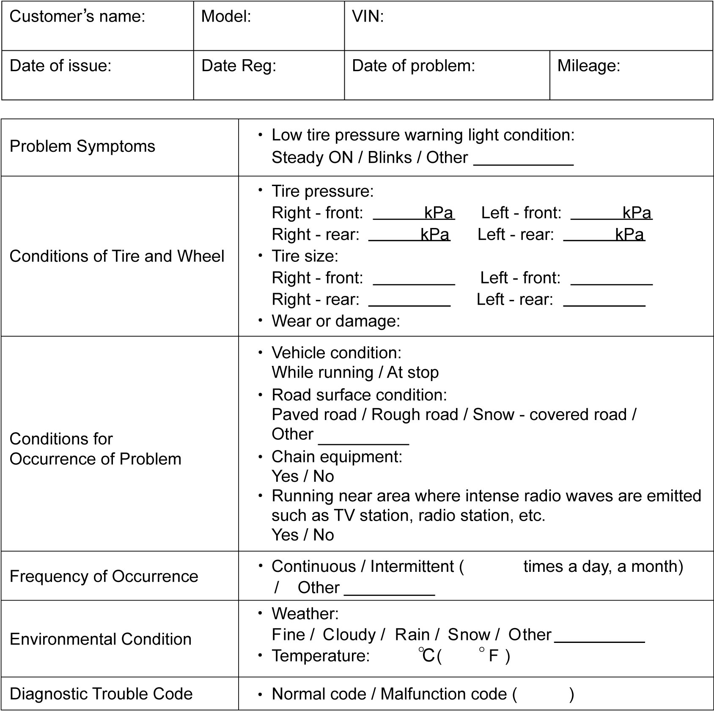

10D
| TPMS Check |
To check that trouble diagnosis is done accurately and smoothly, observe Precautions for Diagnosing Trouble and follow “TPMS Check”.
| Step | Action | Yes | No |
|---|---|---|---|
| 1 |
Customer complaint analysis
1)Perform customer complaint analysis.
Was customer complaint analysis performed?
|
Go to Step 2.
|
Perform customer complaint analysis.
|
| 2 |
Visual inspection
1)Perform visual inspection.
Is there any faulty condition?
|
Repair or replace defective part, and then go to Step 7.
|
Go to Step 3.
|
| 3 |
DTC check, record and clearance
1)Check for DTC.
Is there any DTC(s)?
|
Print DTC or write it down and clear it referring to DTC Clearance. Then go to Step 4.
|
Go to Step 4.
|
| 4 |
Problem symptom confirmation and recheck DTC
1)Perform problem symptom confirmation and recheck DTC.
Is there any DTC(s)?
|
Go to Step 5.
|
Go to Step 6.
|
| 5 |
DTC troubleshooting
1)Perform troubleshooting for applicable DTC.
Are check and repair completed?
|
Go to Step 7.
|
Check and repair defective part, and then go to Step 7.
|
| 6 |
Intermittent problem check
1)Check for intermittent problem.
Is there any faulty condition?
|
Repair or replace defective part, and then go to Step 7.
|
Go to Step 7.
|
| 7 |
Final confirmation test
1)Perform final confirmation test.
Is there any problem symptom, DTC or abnormal condition?
|
Go to Step 4.
|
End.
|
Step 1. Customer Complaint Analysis
Record details of the problem (failure, complaint) and how it occurred as described by the customer. For this purpose, such a questionnaire form shown below will facilitate collecting information for proper analysis and diagnosis.
Customer questionnaire form (Example)

 "Expand image")
Step 2. Visual Inspection
Check each tire and wheel visually for installation condition, crack and damage. When any abnormal condition is found, repair or replace them.
Step 3. DTC Check, Record and Clearance
Perform DTC Check procedure, record it and then clear it referring to DTC Clearance.
DTC indicates malfunction that occurred in system and indicates whether it exists now or it occurred in the past and normal condition has been restored now.
Step 4. Problem Symptom Confirmation and Recheck DTC
Check if what customer claimed in “Customer questionnaire” is actually found in vehicle and if that symptom is found, whether it is identified as a failure. (This step should be shared with the customer if possible.) Check warning light related to TPMS. Drive vehicle at 25 km/h (16 mile/h) or more for 10 minutes or more and then recheck DTC referring to DTC Check.
Step 5. DTC Troubleshooting
Based on the DTC indicated in Step 3 and referring to the applicable DTC diagnosis flow, locate the cause of trouble, namely in sensor, wire harness, connector, TPMS control module or other part and repair or replace faulty parts.
Step 6. Intermittent Problem Check
Check parts that are prone to cause intermittent trouble (e.g. wire harness, connector, etc.), referring to Intermittent Connection and Poor Contact Inspection.
Step 7. Final Confirmation Test
Check that the problem symptom has gone and TPMS is free from any abnormal conditions. If what has been repaired is related to malfunction DTC, clear DTC once and then perform road test, and check that no DTC is indicated.